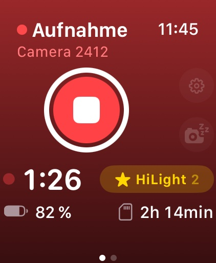
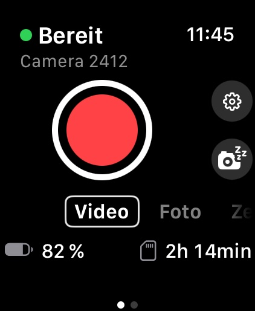
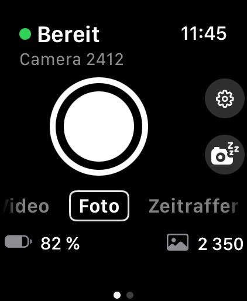
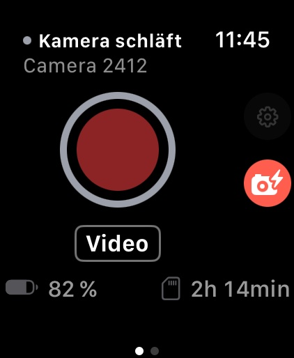

Starte und stoppe deine Action-Cam vom Handgelenk. Ein Tipp weckt sie und nimmt auf, Haptik bestätigt. Presets, HiLights und Akku im Blick. Ohne eigene iPhone-App.




GoWrist ist eine Kamera-Fernbedienung, die ganz auf deiner Apple Watch läuft. Starte und stoppe die Aufnahme vom Handgelenk, während die Kamera am Helm, Lenker oder Brustgurt sitzt, ohne das iPhone herauszuholen.
EIN TIPP ZUR AUFNAHME
Tippe auf den großen Auslöser oder nutze die Doppeltipp-Geste. GoWrist weckt die Kamera, verbindet sich per Bluetooth und startet die Aufnahme. Die Uhr gibt erst dann eine Haptik, wenn die Kamera den Befehl bestätigt hat. So weißt du, dass sie wirklich aufnimmt. Während der Aufnahme wird der Bildschirm rot und zeigt die laufende Zeit.
ALLES IM BLICK
Mit der Digital Crown zwischen Video, Foto und Zeitraffer wechseln
Über das Zahnrad ein Preset des aktuellen Modus wählen
Während der Aufnahme besondere Momente mit HiLight markieren
Akku der Kamera, restliche Videozeit oder Fotos, Status der SD-Karte
Die Kamera mit dem Schlaf-Button schlafen legen und ihren Akku schonen. Derselbe Button weckt sie wieder, ohne aufzunehmen, oder du startest mit dem Auslöser gleich die Aufnahme.
IMMER GRIFFBEREIT
Komplikation mit dem zuletzt bekannten Status auf dem Zifferblatt
Steuerelement „Aufnahme umschalten“ für Kontrollzentrum und Smart Stack, auf der Apple Watch Ultra auch für die Aktionstaste
Mehrere Kameras koppeln und zwischen ihnen wechseln
KOMPATIBILITÄT
Kann mit GoPro® HERO9 Black, HERO10 Black, HERO11 Black, HERO11 Black Mini, HERO12 Black, HERO13 Black und MAX 2 Kameras verwendet werden, mit aktueller Firmware. GoWrist nutzt die öffentlich dokumentierte Open-GoPro-Bluetooth-Low-Energy-API. Die Kamera koppelst du einmal, in ihrem Kopplungsmodus.
GUT ZU WISSEN
Live-Vorschau und Medienübertragung sind über Bluetooth nicht verfügbar; die Kamera bietet sie über WLAN oder USB an.
GoWrist beendet nie von selbst eine laufende Aufnahme. Bricht die Verbindung während der Aufnahme ab, zeigt die App, dass die Kamera vielleicht noch aufnimmt.
Benötigt watchOS 26 oder neuer. Keine iPhone-App nötig.
DATENSCHUTZ
Kein Konto, kein Tracking, keine Werbung, keine Analyse. Deine Daten bleiben auf deiner Uhr. Details in der Datenschutzerklärung. Gekoppelte Kameras und Einstellungen bleiben auf deiner Uhr.